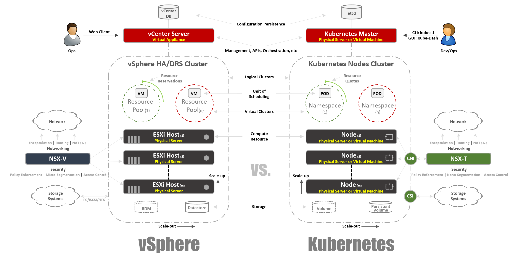
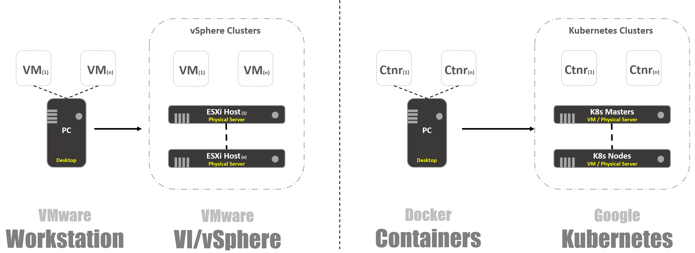
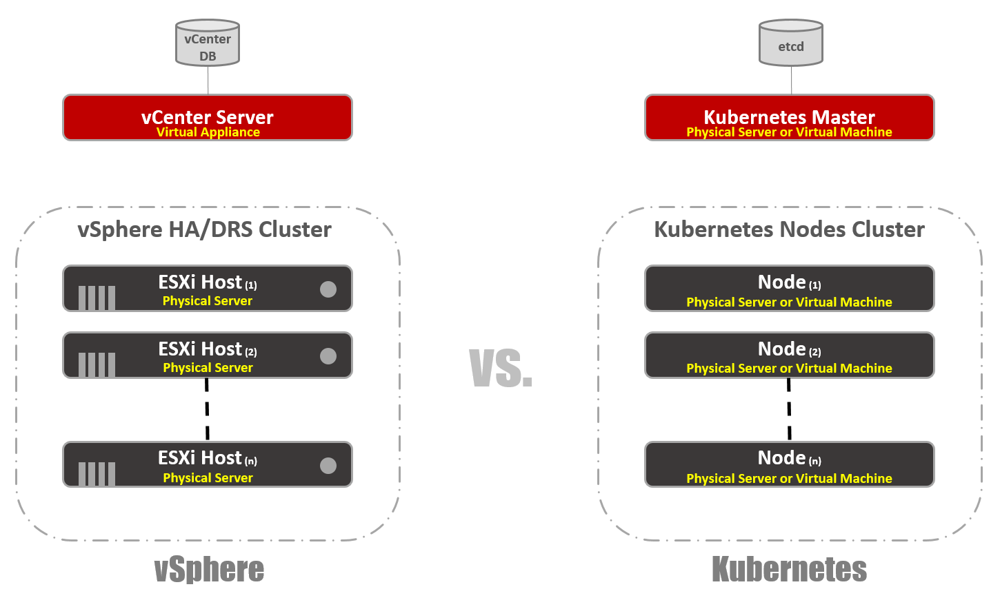
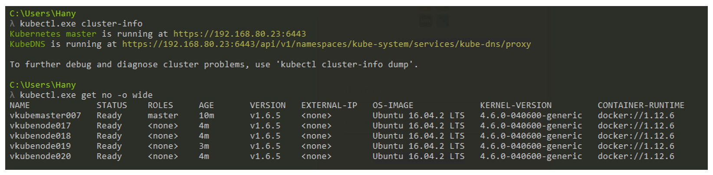
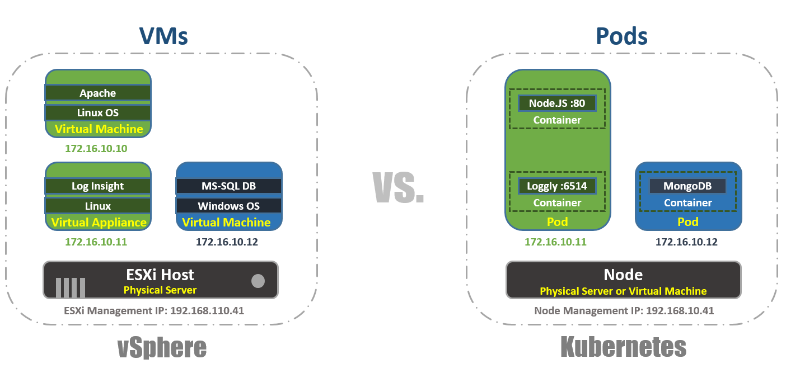
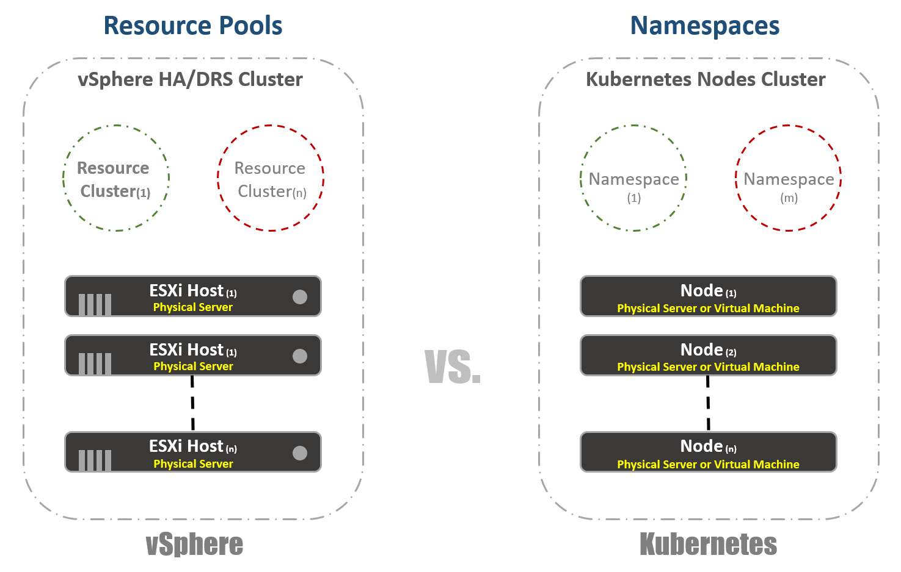
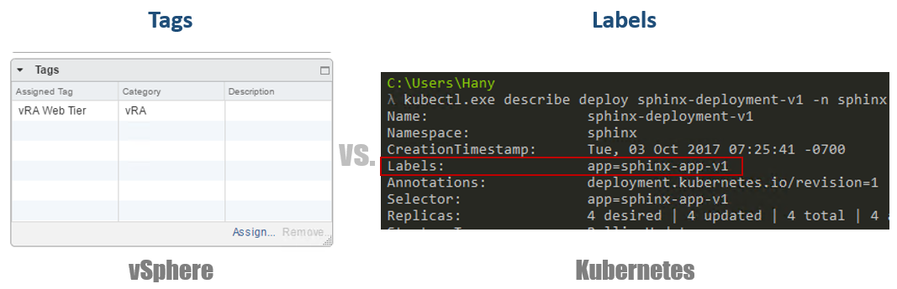

【非原创】写给 VMware 用户看的 Kubernetes 扫盲贴
容器技术是最近几年非常热门的技术，它似乎就是为云端的应用量身定制的，所以它也被贴上了云原生应用 (Cloud Native Application) 技术的标签。目前最为流行的容器管理调度平台是 Kubernetes (缩写为 K8s)，是 Google 为支持大批量容器而开发的企业级运行平台，可以支持负载均衡、高可靠等生产级功能。VMware 在 VMworld 2017 上也宣布了跟 Pivotal、Google 合作开发的 VMware Pivotal Container Service，这是一个商用的 K8s 平台，简称 PKS (中间的K代表 Kubernetes)。
我们专门为 VMware 用户写了这篇文章，利用你所熟悉的 vSphere 平台来跟 K8s 作一个类比，从而帮助你快速了解 K8s。

VSPHERE 平台和 KUBERNETES 的总体对比
那么到底什么是 Kubernetes 呢? 简单来说，K8s 和容器的关系就相当于vSphere和虚机的关系。在 VMware 发展早期的时候，那时候只有 VMware Workstation，后来出现了基于vCenter 和ESXi 的VI/vSphere 体系架构，从而使虚拟化步入了数据中心。同样的，容器一开始的时候只有一个简单的容器引擎 Docker，K8s 的出现为容器提供了一个生产级的运行环境。把 vSphere 和 K8s 平台肩并肩放在一起比较的话，你会发现它们的概念有很多类似之处，这可以帮助我们很快地理解 K8s 技术的各种细节。

系统架构
就像 vSphere 平台上的 vCenter 和 ESXi 主机， K8s 平台上也有对应的概念：Master 和节点 (node)， Master 起到的作用就跟 vCenter 一样，对整个 K8s 集群进行管理，它也是工作负载管理 API 的访问入口。跟 ESXi 主机对应的就是K8s节点，节点是 K8s 集群中的计算资源，容器就是运行在节点上，节点可以是虚机或者物理服务器。K8s 也有一个类似于 vCenter DB 的数据库 “etcd”，它以的“键-值”方式存储了整个集群的配置和状态。

跟 vSphere 不同的是，K8s Master上也能运行容器负载，当然 vCenter Server 上是不运行虚机的。虽然 K8s Master 也是一种计算资源，但是一般只在上面运行系统管理相关的容器应用，普通的应用负载不应该放在 Master 上。
vSphere 有GUI 管理界面 Web Client 和命令行管理接口 vCLI 和 Power CLI，K8s 也提供了GUI 界面或命令行来管理 K8s 集群。下面截屏是使用命令 “kubectl.exe” 来管理K8s 集群的例子，我们可以看到这个集群有一个 Master (vkubemaster007) 和4个节点 (vkubemode017~18)，K8s 的版本是v1.6.5，节点上的操作系统是Ubuntu 16.04。

工作负载
vSphere 中的工作负载调度单位是虚机， K8s 中的调度单位是Pod；一台ESXi 主机上可以运行多个虚机，一个 K8s 节点上也可以运行多个 Pod，每个 Pod 都有一个独立的 IP 地址来跟其他的 Pod 相通讯。在vSphere 环境中，应用运行在虚机的操作系统中，K8s 平台上应用运行在容器里；一个虚机中只能运行一个操作系统实例，而一个 Pod 中可以运行多个容器实例。K8s 会考虑到 Pod 的关联性而把 Pod 中的容器实例运行在同一个节点上，从而让他们共享同一个运行环境；一般是把一个应用和它相关的辅助模块设计在同一个 Pod 中，然后作为一个整体来进行调度运行。

系统配置
K8s 可以通过一个YAML (Yet Another Markup Language) 文件来定义和描述 K8s 集群的配置和状态，然后就可以基于该文件创建整个 K8s 集群，K8s 会尽力地保持集群运行在指定的状态。例如，如果你指定了某一个 Pod 要有4个副本，K8s 就会监控所有这些 Pod 的运行，如果有任何一个 Pod 工作异常的话，它就会设法修复这个状态，实在不行的话就另启一个 Pod 副本。
要理解 YAML 配置文件的话，你可以把它对应为虚机的 .VMX 文件，或是 Virtual Appliance 的 .OVF 文件。当然，YAML 配置文件在 K8s 中不仅用于定义集群，也用于定义其他的组件，如： 副本集合、服务、部署等。

虚拟集群
vSphere 中为了管理资源的分配专门有一个“资源池 (Resource Pool)”的概念，就像是在物理集群中划分出了一些小的虚拟集群，vSphere 利用资源池来控制资源的分配。K8s 也有类似的概念叫“namespaces”，namespace 的主要用途是创建多租户环境，也可以在上面指定资源配额 (Resource Quota) 。

资源管理
vSphere 需要指定每一个 Resource Pool 的资源分配限额，K8s 可以在 namespace 上设置资源配额 (Resource Quotas) 来控制资源分配，这是在 YAML 配置文件中定义的。
{kind=link}
工作负载标记
这在 vSphere 和 K8s 中几乎是完全一致的，vSphere 使用 tag 标签来标识虚机，而 K8s 使用标签 (label) 来标识容器。所不同的是，K8s 中标签是必须的，而不是可选的。
{kind=link}
计算冗余
vSphere 中有 Fault Tolerance 技术来提供计算资源的冗余，受保护的虚机运行在一台服务器上，另一台服务器上有一个从被保护虚机复制而来的影子 (Shadow)，FT 技术通过 Lockstep 来同步主虚机和影子虚机之间的数据和状态。正常情况下影子虚机是不工作的，当主服务器宕机时，影子虚机立刻被激活成主虚机，并继续主虚机工作；这时 vSphere 会设法在集群中找到另一台合适的服务器，在上面从新的主虚机复制出新的影子虚机，以继续对主虚机进行保护。
K8s 中也有相应的资源冗余机制，ReplicaSets 用于指定一个 Pod 需要运行的实例数量，K8s 会自动维持实例的数量，任何一个实例由于故障原因宕掉了，K8s 马上会自动启动一个新的实例补上。当然两者基本的工作原理是不一样的，K8s 中的所有实例正常情况都是在工作的，在多个实例间均衡工作负载，而不存在主备的概念，这是由云原生应用的本质所决定的。
{kind=link}
负载均衡
vSphere 并不内置有负载均衡功能，一般是通过虚拟的 (如NSX) 或物理的 (如F5) 负载均衡器来把服务请求平均分配给多台虚机。负载均衡也有多种配置模式，以单肩模式 (one-armed) 为例，我们把网络流量东西向地均衡分配给虚机。
K8s 中也有类似的概念“Service”，是一组一起协作的 Pod，每个 Pod 都被定义了一个标签选择器 (label selector)。K8s Service 也有多种配置模式，例如“ClusterIP“模式，每个 Service 都被分配了一个外部可见的静态 IP 地址和 DNS 域名以便于被访问到，负载流量以轮循 (round-robin) 的方式分配给每一个 Pod。其他的模式如 “NodePort” ，以不同端口访问节点的流量会被映射到不同的 Pod；当然也可以配成 “LoadBalancer” 模式来使用外部的负载均衡器。
{kind=link}
K8s 还有另外一种非常重要的负载均衡机制 “Ingress Controller”，一个 ingress-controller 以 Pod 的形式存在，并且分配有一个外部可见的 IP 地址，该 IP 地址对应着一个含有通配符的 DNS 记录，ingress-controller 根据预先设定的规则来把流量分配给不同的 Pod。例如下图中的 IP 地址 192.168.100.244 对应 DNS 域名 sphinx-v*.esxcloud.net，访问sphinx-v1.esxcloud.net 的流量会被重定向给 “sphinx-svc-1”，而访问sphinx-v2.esxcloud.net 的流量被重定向给 “sphinx-svc2”。